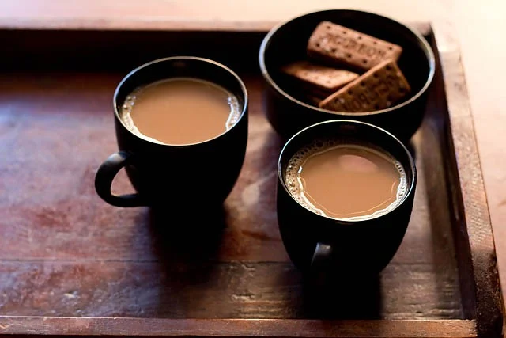

Filter Coffee
A tasty South Indian filter coffee recipe that will have you coming back for more! Add hot milk to this coffee and serve it with tiffin breakfast items like upma, idli, dosa, uttapam or medu vada. Make in just 15 minutes!

Welcome to our BTech Wala Chai, where every cup tells a story and warmth is brewed in every sip. At our chai hotel, we take pride in crafting the perfect blend of aromatic spices, premium tea leaves, and creamy milk to offer you an exquisite chai experience. From the fragrant aroma that wafts through the air to the rich, comforting taste that lingers on your palate, our chai is a symphony of flavors that transcends the ordinary. Each cup is a celebration of tradition, inspired by the vibrant culture of chai-drinking communities. Whether you savor the robust kick of masala chai or indulge in the soothing simplicity of classic chai, our menu caters to every palate. Our commitment to quality ensures that every cup is meticulously prepared, delivering the authenticity and goodness that chai enthusiasts seek. Step into our chai haven, where every moment is an invitation to unwind, connect, and revel in the timeless joy of chai. Join us on a journey of flavor and culture, one cup at a time.
A delicious, warming Indian Ginger Tea made with fresh ginger roots, tea leaves and milk. This tea has a wonderful aroma and will have you coming back for more! It also includes many health benefits and can be made in just 15 minutes. Serve plain or with Indian snacks like pakoras, aloo tikki, vegetable cutlet, medu vada, or samosas.
A tasty South Indian filter coffee recipe that will have you coming back for more! Add hot milk to this coffee and serve it with tiffin breakfast items like upma, idli, dosa, uttapam or medu vada. Make in just 15 minutes!